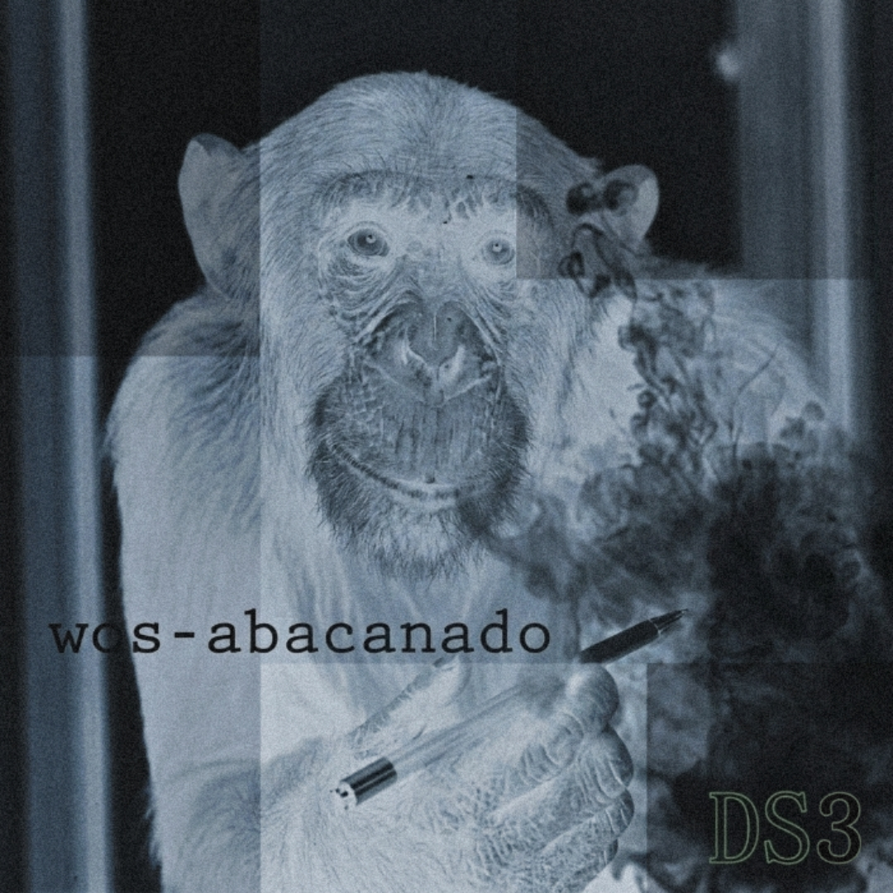

2016 - Buenos Aires, Argentina

“Abacanado” es una de las primeras grabaciones conocidas del rapero argentino Wos y pertenece a su etapa inicial dentro del circuito del hip-hop underground de Buenos Aires. El tema fue realizado aproximadamente entre 2016 y 2017, cuando el artista comenzaba a ganar notoriedad en el ambiente del freestyle y participaba activamente en el colectivo Desastres Squad (DS3).
En términos musicales, el tema se apoya en una base de rap de estilo boom bap, con una estructura sencilla que pone el énfasis en la rima y la interpretación vocal. Las letras reflejan una postura crítica frente a la superficialidad dentro del hip-hop y reivindican la autenticidad del rap como forma de expresión, un rasgo característico de su etapa formativa.
La portada utilizada para este archivo fue reconstruida digitalmente con el objetivo de preservar la calidad visual de este registro histórico, que originalmente circuló solo en plataformas informales como SoundCloud y YouTube.
Material difundido con fines culturales y de preservación histórica.